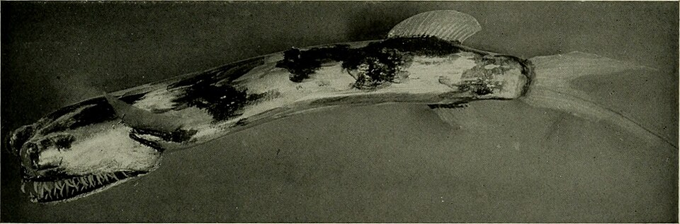

Deze engerds komen vooral voor in tropische wateren zo'n 200 tot 5000 meter diep. Onder dit soort vallen nog 2 verschillende soorten die verschillen met een paat vinnen. Een telescope fish begint zijn leven als een volstrekt andere vis en maakt in hun groei een dramatische verandering mee. Hierdoor dacht men vroeger dat de jonge en oude versie van deze vis twee verschillende soorten waren. Deze vissen kennen ook geen gender en hebben zowel mannelijke als vrouwelijke voortplantingsorganen. Door hun unieke kaak zonder normale botten kunnen ze prooi groter dan hun eigen lichaam eten. Dit is voor een lege plaats als de diepzee wel heel handig. Ik mocht niet zomaar moderne foto's van deze vis gebruiken, maar ik raad wel aan om de telescope fish even op te zoeken.
